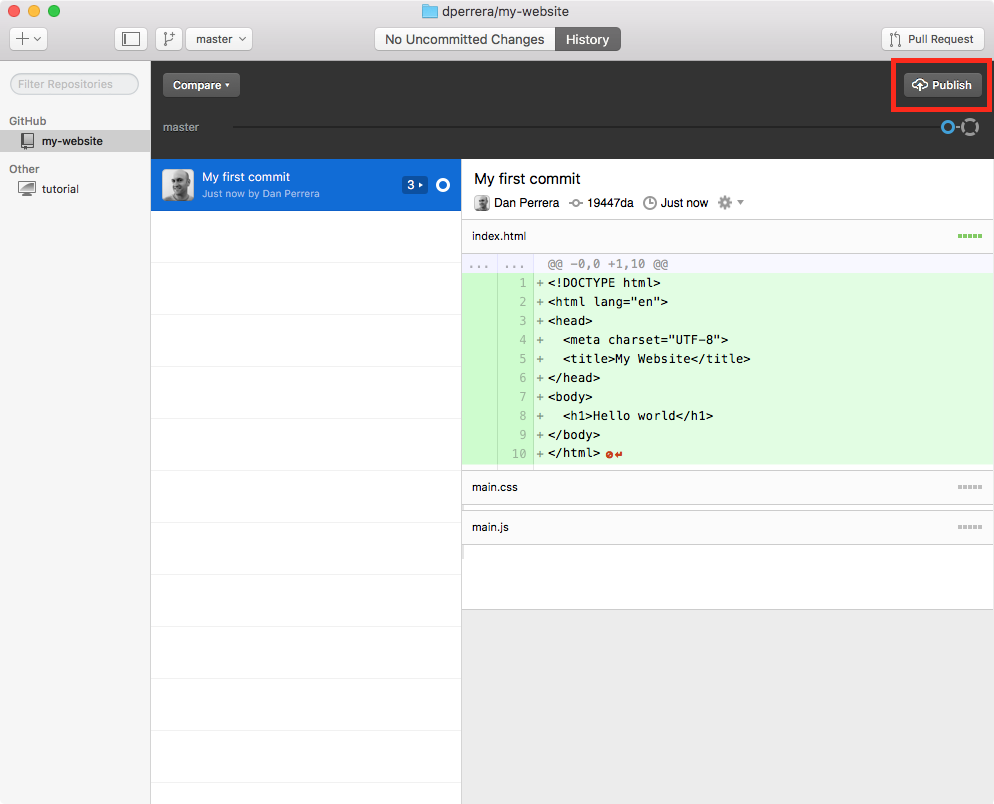

Final Critique Requirements
- Everything you submit must be publicly accessible from a public url.
- Make sure all of your links work and that your sites are free of bugs.
- You must also submit a link to your GitHub repo.
- Your work must be submitted BEFORE you walk into the critique.
- Show up. It’s required.
Submit your work →
How To: Turn a GitHub repo into a website with GitHub Pages
Step 1: Log into your GitHub account
Step 2: Create a new repository
Click the green 'New repository' button:
{kind=link}
Name your repository (all lowercase, no spaces) and click the green 'Create repository' button:
{kind=link}
If your are comfortable with the command line, follow the instructions. Otherwise, download GitHub Desktop then click the 'Set up in Desktop' button:
{kind=link}
In GitHub Desktop hit the 'Clone' button:
{kind=link}
Once your repo is added to GitHub Desktop you can right click on the repo name to open the repo in finder or Atom:
{kind=link}
Step 3: Add your files to your repo
When you add your files to your repo's folder in finder, they will show up in GitHub Desktop.
Your files in finder...
{kind=link}
...show up as changes in GitHub Desktop.
{kind=link}
Step 4: Commit your changes
Make sure your files are checked and add a commit summary, a description is optional. Then click the 'Commit to master' button:
{kind=link}
Step 5: Publish your changes
Once your changes are commited, hit the 'Publish' button:
{kind=link}
Note: The publish button will change to 'Sync' after your first commit. You should frequently commit your changes to GitHub so you always have a back up.
Step 6: Set up GitHub Pages
Go back to your repo on GitHub. You should see that your files have been added. Hit the 'Settings' button:
{kind=link}
Scroll down to the GitHub Pages section and select 'master branch', then hit the 'Save' button:
{kind=link}
Now, when you scroll back down to the GitHub Pages section, you should find a URL to your website:
{kind=link}
Step 7: Visit your website
Make sure that everthing is working.
Note: If your CSS, JS, or images aren't working correctly make sure you have the correct relative path. This might vary from working on your computer's filesystem. See this Stack Overflow question for help.